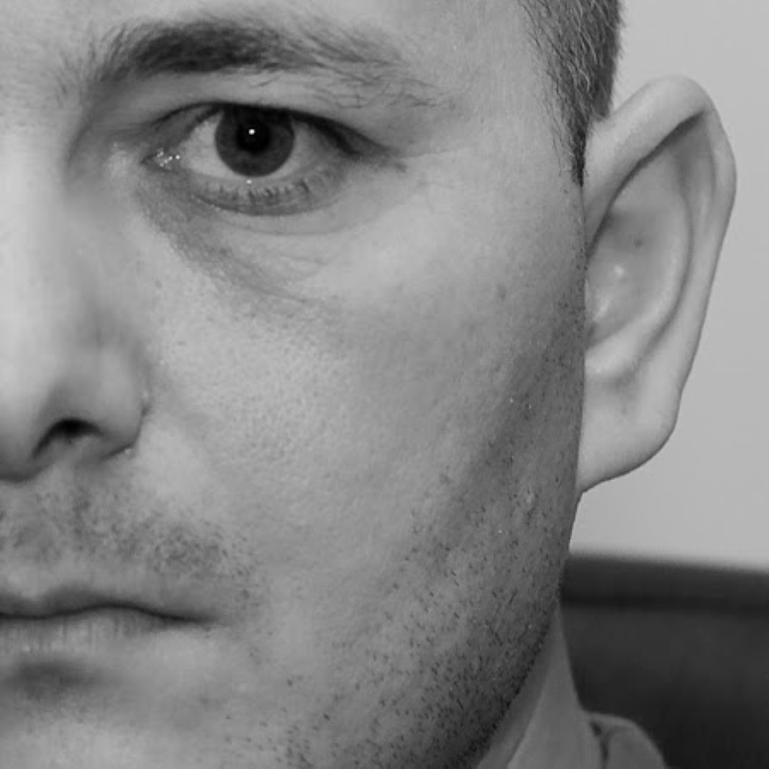
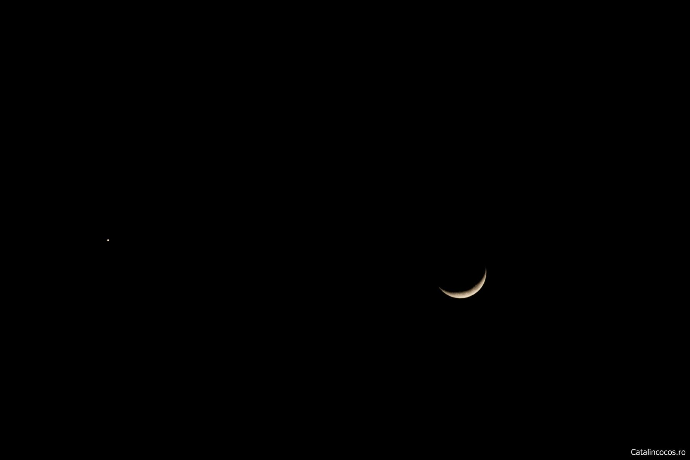
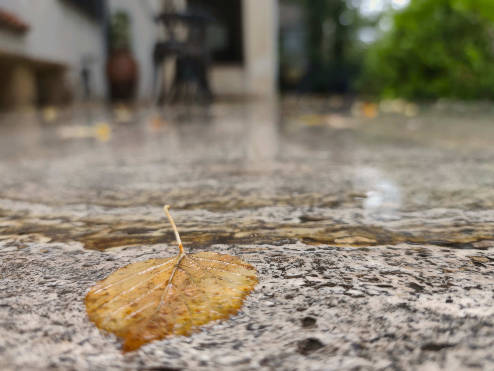

Fotograf & Copywriter — București
Imagini
care spun
povești.
Texte care conving. Cadre care rămân.
„Problema pe care o au oamenii nu este aceea că țintesc prea sus și eșuează, ci aceea că țintesc prea jos și reușesc” – Michelangelo
Există momente în care o imagine și un cuvânt spun împreună mai mult decât oricare dintre ele separat. Fac asta de peste 25 ani.— Cătălin Cocoș
Fotografie
Portret, eveniment, produs, stradă. Imagini cu caracter, nu cu filtru.
Copywriting
Articole SEO, social media, texte de brand. Scris cu sens, optimizat cu cap.
Poezie și Fotografie
Proiecte la intersecția dintre imagine și cuvânt. Un spațiu aparte.

Cătălin
Cocoș
Am început cu ziarele, când ziarele încă existau și banii se dădeau în mână. Când se dădeau, că mai încasai și țepe. Redacțiile de la Ziarul Timișoara, Bănățeanul, West City Radio, ProSport, Gazeta Sporturilor, Banii Noștri, NewsIn, Adevărul mi-au servit fiecare câte o lecție. Toate aceste locuri m-au învățat câte ceva despre cum se construiește un mesaj — și, mai ales, despre cum se distruge unul, dacă nu ești atent.
Apoi a venit televiziunea peste mine. Vreo 13 ani, număr cu noroc, în direct, fără plasă de siguranță și fără posibilitatea de a da Ctrl+Z. La Profit News TV și Medika TV am fost Editor of the Day — adică omul responsabil de tot ce iese pe post, indiferent dacă tocmai s-a întâmplat ceva ce nu era în niciun plan editorial. La Prima News TV am fost editor. Și producător. La România TV am gestionat crawl-ul de știri timp de șase ani. Dacă vreodată te-ai uitat la banda aia care circulă în partea de jos a ecranului și ai dat din cap aprobator — cu ceva șanse, ai dat din cap la munca mea.
Munca în direct face ceva cu tine: îți calibrează simțul urgenței la un nivel pe care nu îl mai poți dezactiva. Orice deadline mi se pare acum confortabil. O poezie, aș spune.
În tot acest timp, fotografia s-a insinuat în viața mea — nu ca hobby, ci ca al doilea limbaj. Același instinct de a găsi unghiul potrivit, aceeași nevoie de a spune ceva într-o secundă. Doar că în loc de cuvinte folosesc lumină. Scriu cu lumină, ca să-i citez pe vechii greci. Aparatul foto mă însoțește peste tot, ceea ce uneori îi bucură pe oamenii din jur. Uneori.
Azi lucrez ca senior copywriter și fotograf independent. Ajut branduri și oameni să se exprime mai clar — în scris și în imagine. Dacă ai nevoie de ambele, ești în locul potrivit și tocmai ți-ai simplificat viața cu un simplu email.
M-am îndrăgostit de jurnalism la Universitatea Tibiscus din Timișoara în primul an de faculate -, încă din mileniul trecut — ceea ce sună mai dramatic decât este. Când am intrat în presă nu se mai ciopleu mesajele în piatră și nici nu se așterneau pe hârtie de pergament dar internetul venea prin linia telefonică și "cârâia". Am și o formare în front-end development, ceea ce înseamnă că înțeleg mediul digital în care trăiesc cuvintele, nu doar textele în sine.
N-am tarif pentru conversații. Încă.
Portofoliu
Servicii
Două meșteșuguri, un singur fir comun: claritatea mesajului. Indiferent că e vorba de un articol sau de un cadru foto, mă interesează să spun ceva real.
Copywriting & Content
Texte care funcționează — pentru motoarele de căutare, pentru oameni și pentru algoritmii AI care indexează din ce în ce mai mult conținut.
- Articole SEO optimizate
- Conținut AEO (featured snippets)
- Conținut GEO (căutare localizată)
- Social media — Facebook, Instagram, LinkedIn
- Texte de brand & descrieri de produse
- Audit de conținut & strategie editorială
Fotografie
Fotografie cu ochi de jurnalist și sensibilitate de artist. Fiecare ședință are un fir narativ — nu e doar „pozat".
- Portret — personal & profesional
- Evenimente & reportaj
- Fotografie de produs
- Stradă & documentar
Strategie de conținut
Nu doar text, ci un plan. Cercetare de cuvinte cheie, analiză de competiție, calendar editorial — totul documentat și aplicabil.
- Audit SEO & analiza gap-urilor de conținut
- Cercetare keywords cu SEranking / SEMrush
- Calendar editorial 6–12 luni
- Brief de brand & ton of voice
Proiecte combinate
Dacă ai nevoie de text și imagine pentru același proiect — campanie, lansare, brand personal — poți lucra cu o singură persoană pentru coerență.
- Pachet text + fotografie pentru campanii
- Brand personal — conținut complet
- Materiale pentru social media (visual + copy)
- Proiecte editoriale mixte
„Fiecare proiect e diferit. Dacă nu ești sigur ce ai nevoie, scrie-mi și discutăm."
Poezie și
Fotografie
Există imagini care cer cuvinte. Există cuvinte care cer imagini. Aici le las să coexiste — fără ierarhie, fără explicații suplimentare.
„Problema pe care o au oamenii nu este aceea că țintesc prea sus și eșuează, ci aceea că țintesc prea jos și reușesc" – Michelangelo

Îmi e imposibil să mai spun ceva sau să mă mai gândesc și la altceva decât la dramatica veste a pierderii unui PRIETEN. Onișor era un OM cum puțini se nasc pe pământ. Acum mi-a rămas doar amintirea lui și poezia asta, pe care mi-a recitat-o în urmă cu aproape 50 de ani. Adio, dragă Onișor!
La Circ...
Un accident banal –
Un acrobat,
Un salt mortal
Și...
Acrobatul nu s-a mai sculat...
Alămurile din orchestră au tăcut,
Iar clovnii din arenă au țipat...
Dar publicul din staluri n-a crezut
Că poate fi și-un accident adevărat
Și-a fluierat...
Zadarnic –
Mortul n-a mai înviat...
Păcat de el!...
Era un tânăr acrobat frumos,
Cu corpul tatuat de sus și până jos,
De care publicul se minuna,
Când îl vedea-ndoit ca un inel,
Sau când pe bara fixă se-nvârtea
Ca o morișcă de cafea
Cu balerina lângă el!...
Dar balerina nu-l iubea!...
Povestea lui?
Hm!...
Povestea mea –
A mea,
A ta
Și-a altora!...
Același accident de circ, banal...
O zi relâche,
Și-apoi, la fel,
Cu-aceeași balerină lângă el,
Alt acrobat...
Alt salt mortal!...
Ion Minulescu — Ultima oră, din volumul „Strofe pentru toată lumea", 1930
E toamnă, e foșnet, e somn...
Copacii, pe stradă, oftează;
E tuse, e plânset, e gol...
Și-i frig, și burează.
Amanții, mai bolnavi, mai triști,
Pe drumuri fac gesturi ciudate —
Iar frunze, de veșnicul somn,
Cad grele, udate.
Eu stau, și mă duc, și mă-ntorc,
Și-amanții profund mă-ntristează —
Îmi vine să râd fără sens,
Și-i frig, și burează.
George Bacovia — Nervi de toamnă

Când aparatul
e în buzunar.
Cel mai bun aparat e cel pe care îl ai la tine. Uneori, asta înseamnă telefonul. Nu e mai puțin valid — e mai spontan.
Poveste de gheață

Culori de gheață
Contact
Fie că ai un proiect concret sau doar o idee vagă, scrie-mi. Clarificăm împreună ce ai nevoie.
„Problema pe care o au oamenii nu este aceea că țintesc prea sus și eșuează, ci aceea că țintesc prea jos și reușesc” – Michelangelo
Trimite un mesaj
* Formularul necesită configurarea Formspree înainte de publicare.